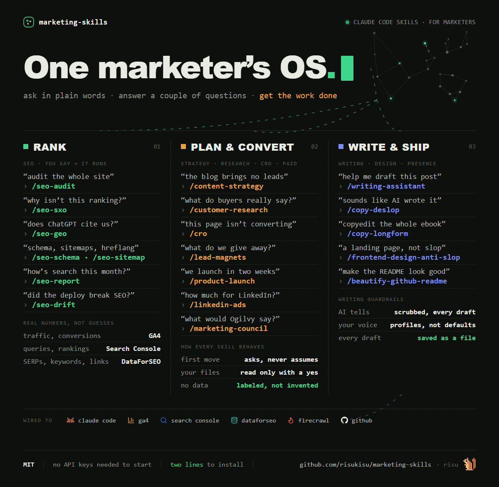
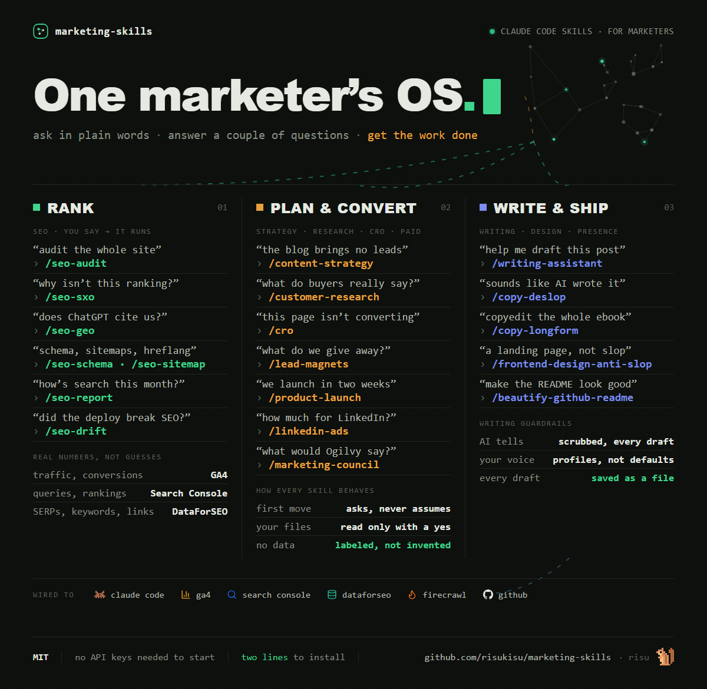
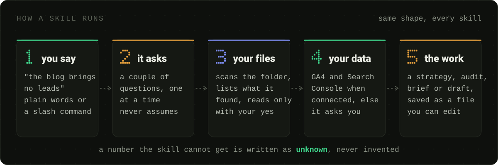

A working marketer's skill library for Claude Code
Type a slash command, or describe the problem in your own words. The matching skill asks a couple of questions, reads your files only when you say yes, and does the work.
Who it's for
Everything here runs real marketing work every week. It is not a showcase of skill ideas; it's the toolshed, with the sawdust left in.
The whole department
You own SEO, the blog, the ads, the newsletter and the launch, and there is no specialist to hand any of it to. The library is the specialist bench you don't have.
The lead who owns the number
The board slide, the pipeline diagnosis and the campaign read have to come out the same shape every month. Three reporting skills hold the format so the numbers are the only thing that changes.
The consultant across clients
Every client is a different folder and nothing may leak between them. No skill assumes a layout: it scans the folder you launched from, lists what it found, and reads nothing until you say yes.
Not for you if you want a dashboard product, a hosted tool, or an agency retainer. This is a folder of plain-text skills you read, diff and edit, and it only does anything inside Claude Code.
The shelf
One folder per skill, each with its own SKILL.md. The folder name is the slash
command. Every skill is self-contained — take the whole library or copy one folder.
In action
Real output only. Everything below came out of a real run — nothing here is a mockup of what the library might do.
The hero at the top of this repository's README, before and after. Light mode moves only what is already in the image — the dots march, the cursor blinks, current flows along the connectors. Nothing new was drawn. Drag the divider.


Shipped as an animated WebP with a static PNG fallback, or a GIF when it has to live in a README. The renderer checks the loop seam, the moving region and the file weight before it hands anything back.
Left is what a language model writes about this library when nobody stops it. Right is the same paragraph after the skill checked it against the live Wikipedia list of AI-writing tells. Highlighted words are the ones it flagged.
BEFORE · 89 WORDS
In today's fast-paced digital landscape, marketing-skills empowers marketers to unlock the full potential of their workflows. This comprehensive suite of powerful tools seamlessly integrates with Claude Code, enabling teams to effortlessly streamline everything from SEO audits to content strategy. Whether you're a solo marketer or part of a growing team, our robust library is designed to help you elevate your marketing game and drive meaningful results. It's not just a collection of skills — it's a game-changer.
AFTER · 62 WORDS
You type the problem the way you'd say it out loud: "why isn't this page ranking?" The matching skill asks a couple of questions, reads your files only when you say yes, and does the work. SEO audits, content strategy, board reports, ad budgets, a draft in your voice with the AI tells scrubbed out. Every skill here runs real marketing work every week.
Fourteen flags in four sentences. Dead-giveaway words (in today's X, empowers, comprehensive, seamlessly, streamline, robust, game-changer), difficulty-minimizers (effortlessly), empty amplifiers (powerful, meaningful results), and one structural tell: not just X, it's Y. The skill refetches the Wikipedia list on every run, so what counts as a tell stays current.
The orchestrator: crawls up to 500 pages, detects the business type, fans out to up to 15 specialists in parallel, and returns a health score with the findings ranked.
This panel stays empty until the crawl has actually happened. The rule for this page is that nothing appears here that did not come out of a real run, so an invented health score is not an option.
Next step: run /seo-audit against a live site and paste the genuine excerpt
in — the score, the ranked findings, and the specialists that fired.
How a skill runs
Five stages, the same every time. A number the skill cannot get is written as
unknown, never invented.

Company context works the same way in every skill that needs it: scan the launch folder, list what was found, ask before reading a single file.
Take it home
Claude Code discovers skills one folder deep under ~/.claude/skills. This repo
nests them by category, so the installer links each skill into place. Your edits land back in
the repo, versioned — updating is a git pull.
git clone https://github.com/risukisu/marketing-skills D:\marketing-skills D:\marketing-skills\install.ps1
git clone https://github.com/risukisu/marketing-skills ~/marketing-skills ~/marketing-skills/install.sh
Just one skill
Every skill folder is self-contained. Copy it into ~/.claude/skills and it
works on its own — no shared runtime, no registry.
Live data, optional
Connect Google Analytics 4 and Search Console and the data-driven skills stop asking you for numbers and start pulling them. Without them, every skill still runs; it asks instead.